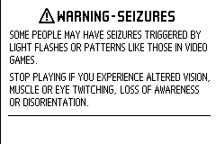

Pokemon Mystery Dungeon - Red Rescue Team (USA) (Demo) (Kiosk)
Stateless / Passcode Debug Menu Patch 📺 Joybus 💾 MultiBoot
Cartridge Identity
- Game Code
B9JE(FamilyB9J)- Header Title
POKEDUN DEMO- Maker / Revision
01/ rev0- ROM Size
- 16.0 MiB (16,777,216 B)
- Save Media
None / Unknown- SHA-256
1ae520cfcf8e64e1f5268a6cb6b2741ddc0a4a156615e150a757b685dfe49375- Engine / SDK Group
comm-001(196 families)
Screenshots

Debug Menu Re-Enablement Patch (.ips)
Download B9JE-debug.ips (45 B IPS / 12 B delta)
- Hook Mechanism
thumb_imm_scene_override· Skip kiosk demo title/intro loops (0x080003bc, 0x080003e0, 0x08000492, 0x080004aa) and set initial MainMenu state at 0x080355f2 (movs r2,#1 -> movs r2,#16) to boot developer Debug Mode menu- IPS SHA-256
b59df481603562b8193f5f8d5f60b3ae4bcc720e4aa70a6ae55b3a4e17fccdc0
gbakit patch apply B9JE-debug.ips original.gba patched-debug.gbaLink Cable & Multiplayer Communications
This title contains detected communication capabilities: 📺 Joybus 💾 MultiBoot.
Detailed protocol specifications, SIO registers, Joybus commands, and MultiBoot sequences are documented in the Link & Multiplayer Reference.
- GameCube Joybus
- RCNT mode literal
0x0000c304(mode0xC000) at offset0x00ce48(RCNT literal at0x00ce34) - GameCube Joybus
- RCNT mode literal
0x0000c304(mode0xC000) at offset0x00ce48(RCNT literal at0x00ce44) - Single-Cart MultiBoot
- Single-Cartridge MultiBoot (Download Play) client/server handler · Thumb SWI 0x25 (
0xDF25):0x3969a8,0x430f18,0x46ec36,0x85b3b0
Cartridge Storage Architecture: Stateless / Passcode
Zero non-volatile battery hardware: This cartridge PCB contains ROM only (no SRAM, Flash, or EEPROM chips). Progression is preserved via on-screen passcodes or session-only gameplay. No
.sav file is generated or required.
ROM Assets, Compression & Audio
- BIOS Compression
- LZ77 (
0x10): 1 streams · RLE (0x30): 0 streams - ROM Pointer Tables
- 219 tables (0 pointing to validated compressed streams)
- SDK Backup Tags
- None
Text, Fonts & Scene Data
- Primary Text Encoding
- Custom 16-bit Huffman (
11,855ASCII strings ·6Shift-JIS runs) - Font & VWF Indicators
- VWF Width Table 1bpp Font · BIOS SWIs: BitUnPack
0x10:3· LZ770x11/12:0· Huffman0x13:0· RLE0x14/15:5 - Scene & Packaging
397ROM pointer tables (≥32 entries,72≥200) ·12relativeu32TOCs ·80OAM metasprite hits
Hardware MMIO Subsystems
ppu_display0x800b2e8,0x800cc3c